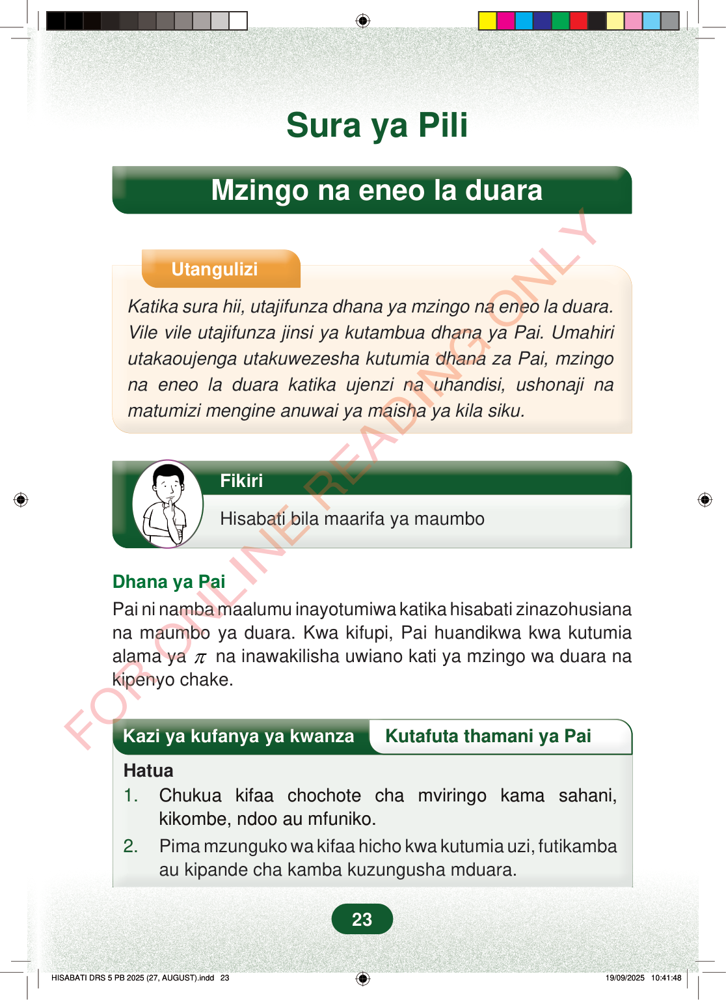

Sura ya PiliMzingo na eneo la duaraUtanguliziKatika sura hii, utajifunza dhana ya mzingo na eneo la duara.Vile vile utajifunza jinsi ya kutambua dhana ya Pai. Umahiriutakaoujenga utakuwezesha kutumia dhana za Pai, mzingona eneo la duara katika ujenzi na uhandisi, ushonaji namatumizi mengine anuwai ya maisha ya kila siku.FikiriHisabati bila maarifa ya maumboDhana ya PaiPai ni namba maalumu inayotumiwa katika hisabati zinazohusianana maumbo ya duara. Kwa kifupi, Pai huandikwa kwa kutumiaalama yaπna inawakilisha uwiano kati ya mzingo wa duara nakipenyo chake.Kazi ya kufanya ya kwanzaKutafuta thamani ya PaiHatua1.Chukua kifaa chochote cha mviringo kama sahani,kikombe, ndoo au mfuniko.2.Pima mzunguko wa kifaa hicho kwa kutumia uzi, futikambaau kipande cha kamba kuzungusha mduara.23
Sura ya Pili
Mzingo na eneo la duara
Utangulizi
Katika sura hii, utajifunza dhana ya mzingo na eneo la duara. Vile vile utajifunza jinsi ya kutambua dhana ya Pai. Umahiri utakaoujenga utakuwezesha kutumia dhana za Pai, mzingo na eneo la duara katika ujenzi na uhandisi, ushonaji na matumizi mengine anuwai ya maisha ya kila siku.
Fikiri
Hisabati bila maarifa ya maumbo
Dhana ya Pai Pai ni namba maalumu inayotumiwa katika hisabati zinazohusiana na maumbo ya duara. Kwa kifupi, Pai huandikwa kwa kutumia alama ya π na inawakilisha uwiano kati ya mzingo wa duara na kipenyo chake.
Kazi ya kufanya ya kwanza Kutafuta thamani ya Pai
Hatua 1. Chukua kifaa chochote cha mviringo kama sahani, kikombe, ndoo au mfuniko. 2. Pima mzunguko wa kifaa hicho kwa kutumia uzi, futikamba au kipande cha kamba kuzungusha mduara.
23
Sura ya PiliMzingo na eneo la duaraUtanguliziKatika sura hii, utajifunza dhana ya mzingo na eneo la duara.Vile vile utajifunza jinsi ya kutambua dhana ya Pai.Umahiri utakaoujenga utakuwezesha kutumia dhana za Pai, mzingo na eneo la duara katika ujenzi na uhandisi, ushonaji na matumizi mengine anuwai ya maisha ya kila siku.Mtoto ameshika kidevu na anafikiri. Pembeni kuna maneno: Fikiri, Hisabati bila maarifa ya maumbo.FikiriHisabati bila maarifa ya maumboDhana ya PaiPai ni namba maalumu inayotumiwa katika hisabati zinazohusiana na maumbo ya duara.Kwa kifupi, Pai huandikwa kwa kutumia alama ya π na inawakilisha uwiano kati ya mzingo wa duara na kipenyo chake.Kazi ya kufanya ya kwanzaKutafuta thamani ya PaiHatua1.Chukua kifaa chochote cha mviringo kama sahani, kikombe, ndoo au mfuniko.2.Pima mzunguko wa kifaa hicho kwa kutumia uzi, futikamba au kipande cha kamba kuzungusha mduara.